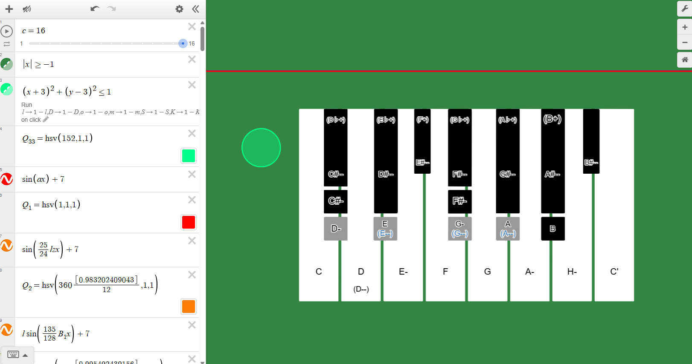
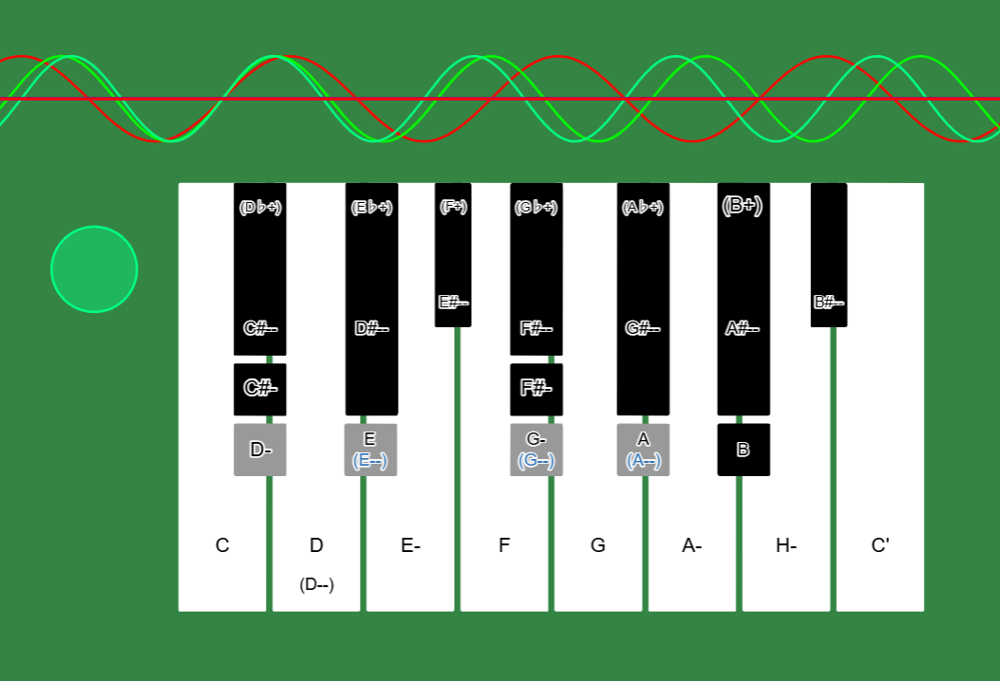
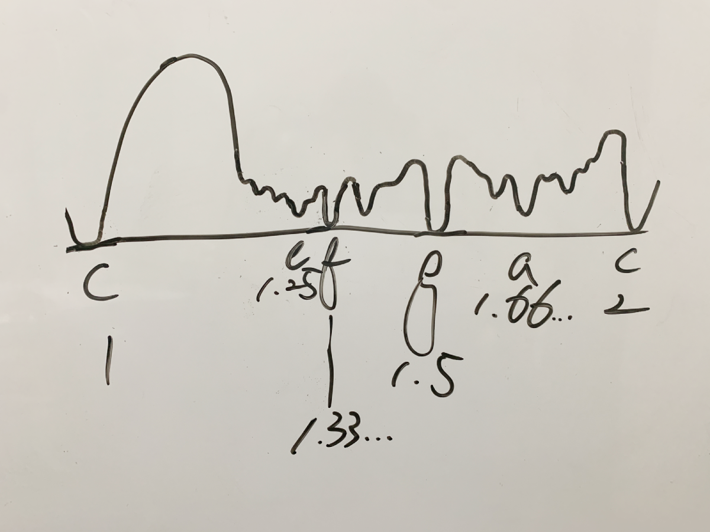

April 25, 2026
A Desmos Prototype for a Just-Intonation Keyboard with Waveform Visualization, Referencing Tanaka Shōhei’s “Broad-Sense Just Intonation” Organ
Overview:
This project is a Desmos implementation by Reiji (age 10).
Reiji attempted to implement a just-intonation keyboard in Desmos, referencing Dr. Tanaka Shōhei’s Japanese-made “pure-tone” organ
and using Dr. Shinohara Moriyoshi’s paper as a guide.
In this work, when a key drawn on the screen is clicked, the corresponding tone is played. At the same time, the sine wave of that tone
is displayed at the top of the screen, using the C key as the reference with a periodic ratio of 1.
When the same key is clicked again, the sound stops and the waveform returns to a straight line.
This structure allows multiple keys to be pressed sequentially so that chords can be heard while the overlapping waveforms based on their
pitch ratios are visually observed.
In addition, by pressing the bright green button placed to the left of the keyboard, the sound of certain keys can be switched to the alternate
pitch written in parentheses inside the key, referencing the switching mechanism found in the actual just-intonation organ.
This makes it possible to treat closely related pitches such as D and D--, E and E--, G and G--, and A and A-- as distinct tones with different ratios,
even though they are difficult to distinguish on a standard twelve-tone equal-tempered keyboard.
Furthermore, by changing the variable \(c\), the number of harmonics included in the generated sound can be varied from the 1st to the 16th harmonic.
This feature was not added simply to check differences in tone color, but to make it easier to hear wolf intervals and other muddy or rough-sounding
intervals in just intonation. By adding harmonics, interference and beating that may be less noticeable between fundamental tones alone become easier
to perceive, making the differences between consonance and dissonance more clearly observable.
Each tone is generated by multiplying a fundamental frequency by a just-intonation pitch ratio.
For example, the C key is based on a fundamental frequency of 261.5 Hz, while the D key uses a ratio such as \(9/8\),
and the switched D pitch uses a ratio such as \(800/729\).
In this way, the structure does not divide pitch into equal steps as in equal temperament, but instead directly embeds the pitch ratios themselves
into the formulas.
This implementation is not merely a sound-producing tool. It is an experimental simulator for observing just-intonation pitch ratios, harmonics,
waveform overlap, beating, and the emergence of wolf intervals through both hearing and sight.
By comparing it with the actual instrument and further adjusting harmonic components in the future, it may develop into a research tool for gaining
a deeper understanding of the structure and sound of Tanaka Shōhei’s just-intonation organ.
Note: All content on this page is originally explained by Reiji in Japanese. The English version is translated by AI and structured by a parent, with Reiji's final approval.
Reiji's Words and Ideas
-
What this is
I attempted to recreate Dr. Tanaka Shōhei’s just-intonation organ in Desmos, using Dr. Shinohara Moriyoshi’s paper as a reference. -
Keyboard sound and waveform visualization
When a key drawn on the screen is clicked, the sound corresponding to that key is played. At the same time, I made it so that the periodic ratio of each tone is displayed as a sine wave at the top of the screen, using the sound of the C key as 1.
When the same key is clicked again, the sound stops and the sine wave returns to a straight line. With this mechanism, the sound can be sustained with a single click, and by pressing multiple keys one after another, it is possible to listen to chords while observing how the waveforms overlap.
Note: The sound is muted at first. To hear the sound, click the speaker icon in the upper left corner of the screen to unmute it. -
Switching mechanism
When the bright green circular button to the left of the keyboard is pressed, the pitch can be switched to the sound written in parentheses inside the key, similar to the switching mechanism of the actual instrument. -
Harmonics for hearing wolf intervals and muddy intervals
The variable \(c\) represents the number of harmonics included in the sound. By changing this value, the number of harmonics included in the sound can be increased from the 1st to the 16th harmonic.
This feature was not added for the purpose of changing the tone color itself, but to make it easier to hear the wolf intervals and other muddy intervals in just intonation. When more harmonics are added, the beating and muddiness caused by overlapping sounds can sometimes become easier to notice. -
Formula for producing sound
As an example of a formula used to produce sound, the key at the C position uses the following expression: \[ \operatorname{tone}\left(261.5\cdot a\cdot[1...c]\right) \] Here, \(261.5\) is the fundamental frequency. The variable \(a\) is either 0 or 1. When it is 0, the sound stops; when it is 1, the sound is played. The variable \(c\) represents the number of harmonics. -
Example: D before and after switching
For the key at the D position, different ratios are used before and after switching. \[ A_{2}=\operatorname{tone}\left((1-D)\cdot\left(261.5\cdot\frac{9}{8}\cdot q\cdot[1...c]\right)\right) \] \[ B_{2}=\operatorname{tone}\left(D\cdot\left(261.5\cdot\frac{800}{729}\cdot w\cdot[1...c]\right)\right) \] In this way, each sound is produced by multiplying the fundamental tone by pitch ratios such as \(9/8\) or \(800/729\). Different variable names are used for each key because each key’s on/off state and switching state need to be controlled individually. -
Formula for displaying waveforms
For displaying the waveforms, I used expressions such as the following: \[ \sin(ax)+7 \] This is the waveform for the key at the C position. This sound is displayed as the reference value of 1.
For the key at the D position, the pitch ratio is included directly in the expression as follows: \[ \sin\left(\frac{9}{8}(1-D)wx\right)+7 \] By placing each key’s pitch ratio directly into the sine-wave expression, the difference in pitch can be seen as a difference in waveform period. -
Beating and interference
Even with pure intervals, when different waves overlap, they can strengthen or weaken each other. As a result, periodic changes appear in the amplitude of the combined wave, and this can be heard as a kind of “beating.”
This phenomenon occurs not only between fundamental tones, but also between harmonics. I thought that, when harmonics interfere with each other, patterns similar to interference fringes may also appear within the sound. -
Future tasks
As a future task, I felt that there are many things that cannot be fully understood without comparing this with the actual just-intonation organ. If I have the opportunity to examine the real instrument, I would like to analyze its pitches, tone colors, and switching mechanism in more detail.
In this implementation, the number of harmonics can be changed, but the component ratio of each harmonic is not yet adjusted. In the future, if the component ratio of each harmonic can be adjusted, it may be possible to create a sound closer to that of the actual instrument.
If I can improve the completeness of this work, anyone will be able to experience a simulated just-intonation organ online. I would like to continue this research.

Full View of the Just-Intonation Organ-Style Keyboard Implemented in Desmos
A full view of the just-intonation keyboard drawn in Desmos. Each key plays the corresponding sound when clicked, and the sound stops when the key is clicked again. The bright green circular button on the left switches certain keys to the alternate pitches shown in parentheses inside the keys. On the left side of the screen, formulas for the tone() function, sine-wave visualization, keyboard drawing, and switching variables are written.

Sine Waves Corresponding to Keyboard Input and Pitch Ratios
Sine waves displayed at the top of the screen when keys are clicked. Using the C key as the reference with a periodic ratio of 1, the other tones are shown as differences in waveform period based on their just-intonation pitch ratios. By pressing multiple keys, it is possible to listen to the sound while observing the overlap of the waveforms.

Handwritten Note Explaining the Relationship Between Beating and Dissonance
A handwritten graph showing changes in dissonance, created while explaining beating. Across the interval from C to the octave C, the graph organizes the relationship between relatively consonant intervals and more unstable intervals, while considering positions such as the perfect fifth, perfect fourth, and major third. Referring to Figure 12 on p.90 of Abe Shun’s Harmony in Just Intonation, Reiji attempted to understand the structure of beating and dissonance in just intonation.
| Output Link | Desmos page (interactive) |
|---|---|
| Application Used |
Desmos + tone() (Official site: https://www.desmos.com/ ) |
| References |
Shinohara Moriyoshi “Tanaka Shōhei’s Japanese-Made ‘Just-Intonation’ Organ: The Realization of ‘Broad-Sense Just Intonation’” Abe Shun Harmony in Just Intonation |
AI Assistant’s Notes and Inferences
What is especially important in this implementation is that Reiji did not simply create a “keyboard that plays just-intonation sounds.” Rather, he incorporated a structure into Desmos that simultaneously handles pitch ratios, waveforms, harmonics, and a key-switching mechanism.
- Desmos is usually used as a graphing tool, but in this work, Reiji combines Desmos’s tone() function, variables, click events, lists, sine-wave displays, and geometric drawing to integrate a visual keyboard interface with an acoustic simulation. This work lies between mathematical modeling and musical experimentation.
- One particularly important point is that each pitch is defined not as a frequency difference, but as a ratio. In just intonation and in Tanaka Shōhei’s just-intonation organ, intervals are treated not as equal divisions of pitch, as in equal temperament, but as relationships based on integer ratios. In this implementation as well, ratios such as \(9/8\) and \(800/729\) are directly embedded into the formulas.
- The structure that allows certain keys to switch to alternate pitches also appears to correspond to the idea behind Tanaka Shōhei’s just-intonation organ, which handled pitch distinctions that are difficult to express within a fixed twelve-tone equal-tempered keyboard. Pitches such as D and D--, E and E--, G and G--, and A and A-- may appear visually close, but they are treated as tones with different ratios.
- The waveform display is not merely decorative; it functions as an important means of visualizing pitch ratios. When C is treated as 1, D is displayed as a wave with a slightly faster period, such as \(9/8\), allowing the heard pitch difference and the visually observed difference in period to be connected.
- The ability to change the number of harmonics included in the sound through the variable \(c\) is another important feature of this work. The main purpose of this function is not tone-color design, but to make wolf intervals and muddy intervals in just intonation easier to hear. By including harmonics, interference and beating that are less noticeable with fundamentals alone become more pronounced.
- Reiji’s explanation of beating is also notable. He does not treat beating simply as a phenomenon in which the sound becomes muddy, but understands it as a change in amplitude caused by the overlap of multiple waves — in other words, as a type of interference. Furthermore, he extends this understanding beyond the fundamental tones to the relationships between harmonics.
Overall, this work is a natural integration of Reiji’s previous explorations of tuning systems, ratios, waveforms, and Desmos implementation. In particular, the fact that he is trying to reconstruct a historical and theoretical object — Tanaka Shōhei’s just-intonation organ — in Desmos based on materials he has read himself is highly noteworthy as an independent project by a 10-year-old.